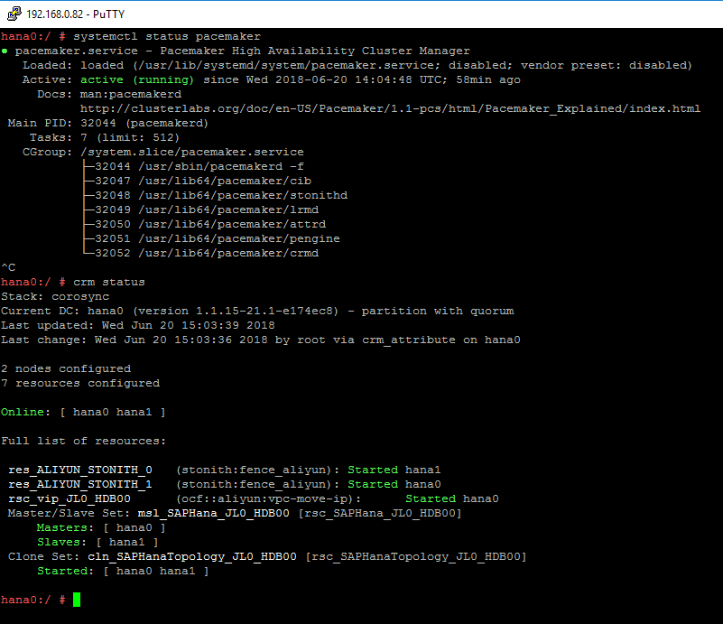

It is recommended that you add more redundancy for messaging (Heartbeat) by using separate ENIs attached to the ECS instances with a separate network range.
On Alibaba Cloud, it is strongly suggested to only use Unicast for the transport setting in Corosync.
Follow the steps below to configure Corosync:
Create Keys
Run corosync-keygen on the Primary SAP HANA node. The generated key will be located in the file: /etc/corosync/authkey.
In the example at hand, the command is executed on hana1:
 |
Configure /etc/corosync/corosync.conf as root on the Primary SAP HANA node with the following content:
totem {
version: 2
token: 5000
token_retransmits_before_loss_const: 6
secauth: on
crypto_hash: sha1
crypto_cipher: aes256
clear_node_high_bit: yes
interface {
ringnumber: 0
bindnetaddr: **IP-address-for-heart-beating-for-the-current-server**
mcastport: 5405
ttl: 1
}
# On Alibaba Cloud, transport should be set to udpu, means: unicast
transport: udpu
}
logging {
fileline: off
to_logfile: yes
to_syslog: yes
logfile: /var/log/cluster/corosync.log
debug: off
timestamp: on
logger_subsys {
subsys: QUORUM
debug: off
}
}
nodelist {
node {
ring0_addr: **ip-node-1**
nodeid: 1
}
node {
ring0_addr: **ip-node-2**
nodeid: 2
}
}
quorum {
# Enable and configure quorum subsystem (default: off)
# see also corosync.conf.5 and votequorum.5
provider: corosync_votequorum
expected_votes: 2
two_node: 1
}IP-address-for-heart-beating-for-the-current-server should be replaced by the IP address of the current server, used for messaging (heartbeat) or SAP HANA System Replication. In the example at hand, the IP address of ENI of the current node (192.168.0.83 for hana0 and 192.168.1.246 for hana1) is used.
Note
This value will be different on Primary and Secondary node. The nodelist directive is used to list all nodes in the cluster.
ip-node-1 and ip-node-2 should be replaced by the IP addresses of the ENIs attached to ECS instances for Heartbeat purpose or HANA System Replication purpose. In the example at hand, it should be 192.168.0.83 for hana0 and 192.168.1.246 for hana1.
After completing the editing of /etc/corosync/corosync.conf on the Primary HANA node, copy the files /etc/corosync/authkey and /etc/corosync/corosync.conf to /etc/corosync on the Secondary SAP HANA node with the following command:
scp /etc/corosync/authkey root@**hostnameOfSecondaryNode**:/etc/corosync
In the example at hand, the following command is executed:
 |
After you have copied the corosync.conf to the Secondary node, configure the bindnetaddr as above to the local heart beating IP address.
For the SAP HANA High Availability solution, you need to configure seven resources and the corresponding constraints in Pacemaker.
Note
The following Pacemaker configuration only needs to be done on one node. It is usually done on the Primary node.
Add the configuration of the bootstrap and default setting of the resource and operations to the cluster. Save the following scripts in a file: crm-bs.txt.
property $id='cib-bootstrap-options' \
stonith-enabled="true" \
stonith-action="off" \
stonith-timeout="150s"
rsc_defaults $id="rsc-options" \
resource-stickness="1000" \
migration-threshold="5000"
op_defaults $id="op-options" \
timeout="600"Execute the command below to add the setting to the cluster:
crm configure load update crm-bs.txt
This part defines the Aliyun STONITH devices in the cluster.
Save the following scripts in a file for SLES12 SP2 and older releases: crm-stonith.txt.
primitive res_ALIYUN_STONITH_1 stonith:fence_aliyun \
op monitor interval=120 timeout=60 \
params pcmk_host_list=<primary node hostname> port=<primary node instance id> \
access_key=<access key> secret_key=<secret key> \
region=<region> \
meta target-role=Started
primitive res_ALIYUN_STONITH_2 stonith:fence_aliyun \
op monitor interval=120 timeout=60 \
params pcmk_host_list=<secondary node hostname> port=<secondary node instance id> \
access_key=<access key> secret_key=<secret key> \
region=<region> \
meta target-role=Started
location loc_<primary node hostname>_stonith_not_on_<primary node hostname> res_ALIYUN_STONITH_1 -inf: <primary node hostname>
#Stonith 1 should not run on primary node because it is controlling primary node
location loc_<secondary node hostname>_stonith_not_on_<secondary node hostname> res_ALIYUN_STONITH_2 -inf: <secondary node hostname>
#Stonith 2 should not run on secondary node because it is controlling secondary nodeSave the following scripts in a file for SLES12 SP3 and newer releases: crm-stonith.txt.
primitive res_ALIYUN_STONITH_1 stonith:fence_aliyun \
op monitor interval=120 timeout=60 \
params plug=<primary node instance id> \
access_key=<access key> secret_key=<secret key> \
region=<region> \
meta target-role=Started
primitive res_ALIYUN_STONITH_2 stonith:fence_aliyun \
op monitor interval=120 timeout=60 \
params plug=<secondary node instance id> \
access_key=<access key> secret_key=<secret key> \
region=<region> \
meta target-role=Started
location loc_<primary node hostname>_stonith_not_on_<primary node hostname> res_ALIYUN_STONITH_1 -inf: <primary node hostname>
#Stonith 1 should not run on primary node because it is controlling primary node
location loc_<secondary node hostname>_stonith_not_on_<secondary node hostname> res_ALIYUN_STONITH_2 -inf: <secondary node hostname>
#Stonith 2 should not run on secondary node because it is controlling secondary nodeBe sure to implement the following changes:
[primary node hostname] / [secondary node hostname] should be replaced by the real hostname of your primary and secondary hostname, in our case is hana0 and hana1.
[primary node instance id] / [secondary node instance id] should be replaced by the real instance-id of your ECS instance, you can get this from the Alibaba Cloud console. For SLES 12 SP3 or newer releases, please use plug instead of port.
[access key] should be replaced with real access key.
[secret key] should be replaced with real secret key.
[region] should be replaced with real region name where the node is located.
Execute the command below to add the resource to the cluster:
crm configure load update crm-stonith.txt
This part defines an SAPHanaTopology RA, and a clone of the SAPHanaTopology on both nodes in the cluster. Save the following scripts in a file: crm-saphanatop.txt.
primitive rsc_SAPHanaTopology_<SID>_HDB<instance number> ocf:suse:SAPHanaTopology \
operations $id="rsc_SAPHanaTopology_<SID>_HDB<instance number>-operations" \
op monitor interval="10" timeout="600" \
op start interval="0" timeout="600" \
op stop interval="0" timeout="300" \
params SID="<SID>" InstanceNumber="<instance number>"
clone cln_SAPHanaTopology_<SID>_HDB<instance number> rsc_SAPHanaTopology_<SID>_HDB<instance number> \
meta clone-node-max="1" interleave="true"Be sure to implement the following changes:
[SID] should be replaced by the real SAP HANA SID.
[instance number] should be replaced by the real SAP HANA Instance Number.
Execute the command below to add the resources to the cluster:
crm configure load update crm-saphanatop.txt
This part defines an SAPHana RA, and a multi-state resource of SAPHana on both nodes in the cluster. Save the following scripts in a file: crm-saphana.txt.
primitive rsc_SAPHana_<SID>_HDB<instance number> ocf:suse:SAPHana \
operations $id="rsc_SAPHana_<SID>_HDB<instance number>-operations" \
op start interval="0" timeout="3600" \
op stop interval="0" timeout="3600" \
op promote interval="0" timeout="3600" \
op monitor interval="60" role="Master" timeout="700" \
op monitor interval="61" role="Slave" timeout="700" \
params SID="<SID>" InstanceNumber="<instance number>" PREFER_SITE_TAKEOVER="true" \
DUPLICATE_PRIMARY_TIMEOUT="7200" AUTOMATED_REGISTER="false"
ms msl_SAPHana_<SID>_HDB<instance number> rsc_SAPHana_<SID>_HDB<instance number> \
meta clone-max="2" clone-node-max="1" interleave="true"Be sure to implement the following changes:
[SID] should be replaced by the real SAP HANA SID.
[instance number] should be replaced by the real SAP HANA Instance Number.
Execute the command below to add the resources to the cluster:
crm configure load update crm-saphana.txt
This part defines a Virtual IP RA in the cluster. Save the following scripts in a file: crm-vip.txt.
primitive res_vip_<SID>_HDB<instance number> ocf:aliyun:vpc-move-ip \ op monitor interval=60 \ meta target-role=Started \ params address=<virtual_IPv4_address> routing_table=<route_table_ID> interface=eth0
Be sure to implement the following changes:
[virtual_IP4_address] should be replaced by the real IP address you prefer to provide the service.
[route_table_ID] should be replaced by the route table ID of your VPC.
[SID] should be replaced by the real SAP HANA SID.
[instance number] should be replaced by the real SAP HANA Instance Number.
Execute the command below to add the resource to the cluster:
crm configure load update crm-vip.txt
Two constraints are organizing the correct placement of the virtual IP address for the client database access and the start order between the two resource agents SAPHana and SAPHanaTopology. Save the following scripts in a file: crm-constraint.txt.
colocation col_SAPHana_vip_<SID>_HDB<instance number> 2000: rsc_vip_<SID>_HDB<instance number>:started \
msl_SAPHana_<SID>_HDB<instance number>:Master
order ord_SAPHana_<SID>_HDB<instance number> Optional: cln_SAPHanaTopology_<SID>_HDB<instance number> \
msl_SAPHana_<SID>_HDB<instance number>Be sure to implement the following changes:
[SID] should be replaced by the real SAP HANA SID;
[instance number] should be replaced by the real SAP HANA Instance Number;
Execute the command below to add the resource to the cluster:
crm configure load update crm-constraint.txt
Start the SAP HANA High Availability Cluster on both nodes:
systemctl start Pacemaker
Monitor the SAP HANA High Availability Cluster with the following commands:
systemctl status pacemaker crm_mon –r
In the example at hand, the result looks as follows:
|  |
Meanwhile, check if a new entry [virtual_IP4_address] is added into the route table of the VPC.
In the example at hand, the following result is shown:
 |